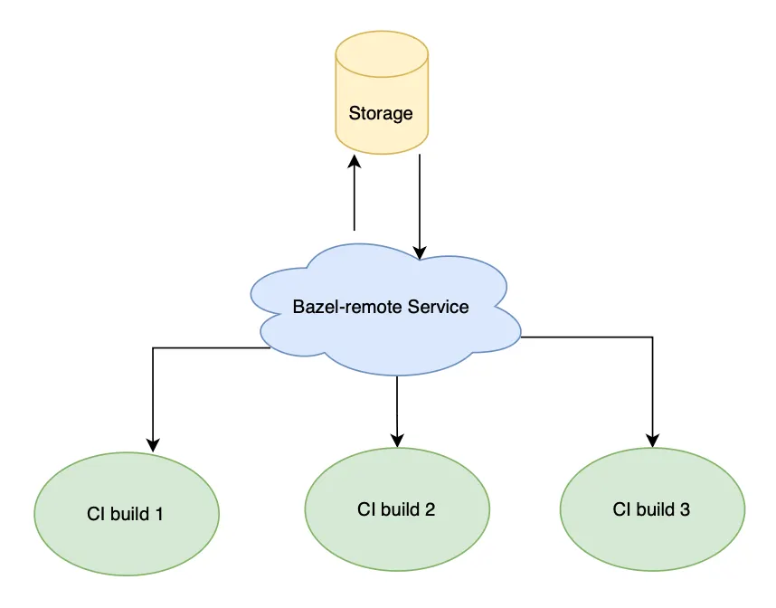
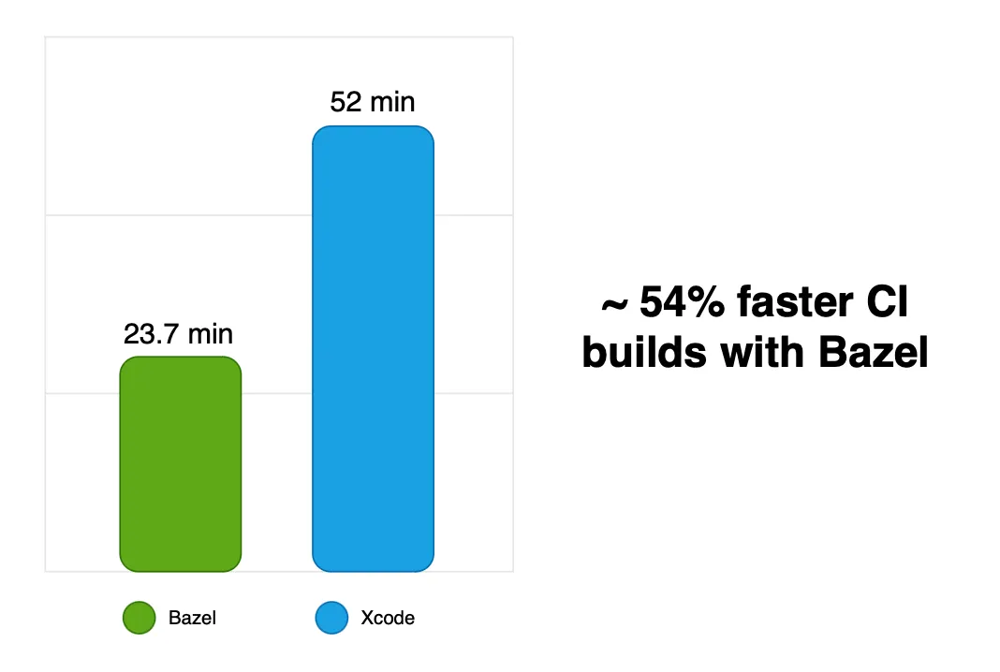
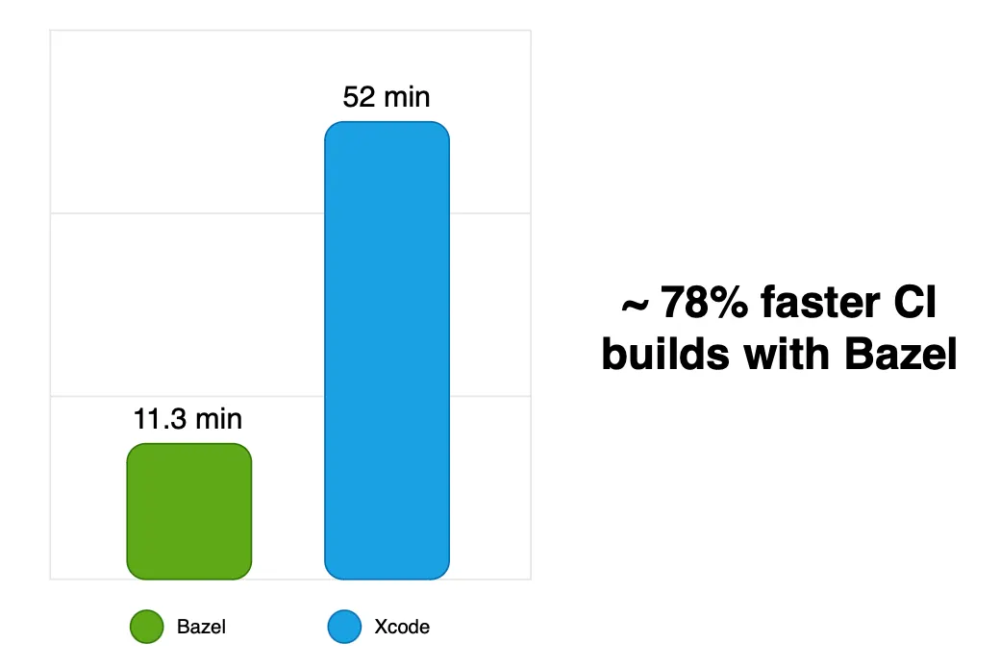

Em grandes empresas de tecnologia, um problema recorrente são os tempos de build altos, que trazem consigo toda uma cascata de problemas como: diminuição de produtividade dos engenheiros ao construir e/ou testar softwares localmente, grandes filas no CI, ocasionando morosidade de feedback dos testes e integração de pull requests, entre outros.
Algumas empresas investem em super máquinas para os engenheiros e CI a fim de tentar solucionar, mas esse tipo de saída costuma ser a mais cara e não é escalável, pois dependendo da velocidade de crescimento do software, essa solução pode durar apenas alguns meses.
No contexto de iOS, temos disponíveis algumas soluções bem mais baratas e escaláveis (mas às vezes também não tão rápidas para implementar). Pensando nisso, resolvi detalhar neste artigo a minha jornada ao utilizar a ferramenta Bazel para solucionar esse problema em uma big tech.
Por que Bazel e não outro build system?
Bazel já possui uma comunidade iOS bem consolidada e bastante colaborativa, e para o projeto a qual estava avaliando, o Bazel se encaixava perfeitamente por ter a estrutura ideal (monorepo + modularização por frameworks).
Outros build systems que poderiam ser utilizados seriam o Buck (inclusive já existem empresas brasileiras que obtiveram sucesso com esse build system), porém, existe um movimento em big techs que visa migrar do Buck para o Bazel por "n" fatores, o que levantou uma bandeira em relação à adoção dele e como seria a sustentabilidade do mesmo.
Além disso, uma parte da implementação do Bazel já havia sido iniciada dentro do projeto, mas ficou parada por alguns meses e sem manutenção — logo, não estava funcionando.
Desafio de manutenabilidade
Foi com essa premissa que iniciei a migração.
Pensando nisso, mostro alguns exemplos de automação que usei para que a própria ferramenta se sustentasse com a evolução do projeto:
Criação de novos módulos (frameworks)
A cada novo framework, era necessário criar um arquivo BUILD, para possibilitar a
construção pelo Bazel. Para isso, foi adotada a abordagem de copiar um arquivo de template para o
novo módulo, alterando apenas os placeholders do arquivo BUILD copiado.
Exemplo de template:
load("@build_bazel_rules_ios//rules:framework.bzl", "apple_framework")
load("@build_bazel_rules_ios//rules:test.bzl", "ios_unit_test")
apple_framework(
name = "<framework_name>",
srcs = glob([
"<framework_name>/**/*.swift"
]),
deps = []
)
ios_unit_test(
name = "<framework_name>Tests",
deps = [
":<framework_name>"
],
srcs = glob([
"<framework_name>Tests/**/*.swift"
]),
size = "small"
)Exemplo de script:
cp Templates/BUILD.bazel Modules/NewModule/
find . ! -name ".bazel" -type f -exec sh -c \
"sed -i '' 's/<framework_name>/NewModule/g' '{}'" \;Resolução de dependências
A cada import de um framework, é necessário adicioná-lo como dependência no arquivo BUILD
do framework ou application dependente, forçando o engenheiro a visitar esses arquivos para adicionar
manualmente.
A solução desenvolvida foi criar um script de resolução automática de dependências,
baseado no algoritmo de busca em profundidade e, após coletar as dependências de cada framework,
reescreve a sessão de dependências de um arquivo BUILD. Isso é útil tanto para a
inclusão de uma nova dependência com base nos imports nos arquivos Swift, quanto para a exclusão,
quando não existe mais imports para tal framework.
Erros de compilação
Um dos grandes problemas que encontrei ao realizar a migração foi compilar targets do tipo
application que possuíam código fonte misto (Objective-C + Swift).
Já era um problema esperado devido a relatos de outras empresas que tiveram complicações de
interoperabilidade usando o Bazel. Para minha sorte, o rules_ios já resolvia boa parte
dos problemas, mas alguns casos específicos persistiram:
bazel-out/ios-applebin/bin/app/Workout-Swift.h:217:9 fatal error:
'/var/folders/2sdfs/Workout-Bridging-Header-1.pch' file not found
#import "/var/folders/2sdfs/Workout-Bridging-Header-1.pch"
1 error generated
Error in child process '/usr/bin/xcrun'. 1Depois de pesquisar e fazer POCs separadas, consegui reproduzir o mesmo problema, que acontecia nos seguintes casos:
- Extension de uma class Objective-C escrita em Swift com a notação
@objc, tornando-as visíveis em código Objective-C por meio do arquivoNomeDoApp-Swift.hauto gerado durante compilação. - Classes escritas em Swift que herdam de uma class Objective-C.
Nessas duas ocorrências, o Xcode conseguia se virar bem — mas o Bazel ainda não conseguia resolver. Então eu decidi resolver por ele, já que ao fazer o levantamento de esforço não seria tão complexo.
Implementação do Bazel cache
Após fazer o Bazel funcionar corretamente, era hora de usá-lo como build system oficial no CI, a fim de testar as Pull Requests.
No entanto, ainda não utilizávamos uma das features principais do Bazel: o seu
mecanismo de cache. Para isso, foi necessário subir um serviço do
bazel-remote para gerenciar os artefatos de cache gerados em builds no CI e
poder reaproveitar em builds subsequentes.

Arquitetura do Bazel-remote Service distribuindo cache entre os builds do CI
Testar somente o necessário
A forma como o cache do Bazel é gerado auxilia na implementação de soluções performáticas para minimizar o tempo de build&test sem afetar a qualidade dos feedbacks. Uma dessas soluções é o bazel-diff, que busca a diferença entre commits e forma uma lista contendo somente os targets afetados pelas alterações no código fonte.
Da forma como o CI estava implementado no projeto, essa ferramenta não funcionaria corretamente.
Então criei uma versão simplificada do bazel-diff, construída da seguinte forma:
1. Identificar quais módulos foram modificados via GitHub CLI:
pr_diff=$(gh pr view ${PULL_REQUEST_NUMBER} --json files --jq '.files[].path')2. Usar bazel query com rdeps para encontrar módulos afetados implicitamente:
bazel query 'kind("ios_unit_test", rdeps(//app/..., //Modules/ModifiedModule))'3. Passar o resultado para o bazel test:
bazel test //Module1:Module1Tests //Module2:Module2Tests //Module3:Module3TestsA vantagem dessa solução é que deixou a execução com comportamento semelhante a algoritmos logarítmicos: mesmo aumentando a base de código, o tempo de execução se mantém estável com curva de crescimento baixíssima. Abaixo, os ganhos alcançados:

~54% de redução no tempo de build após testes seletivos com bazel-diff
RIP: SDKs legados
Projetos de larga escala com certo tempo de existência possuem tecnologias ou implementações defasadas. Isso dificulta a implementação de ferramentas recentes.
Algumas bibliotecas externas pré-compiladas inseridas em projetos iOS ainda não possuem suporte para Simuladores arm64. Nesses tipos de projetos, não é possível usar o binário do Bazel arm64 para compilar.
Buscando soluções, passei a usar o arm-to-sim, que pegava o slice arm64 disponibilizado para iPhoneOS e manipulava para que fosse visto pelo compilador como um binário arm64 para Simuladores. Essa solução era muito boa para cerca de 95% das bibliotecas sem suporte existentes no projeto. Os 5% restantes não poderiam se beneficiar com ela, então foi montado um plano para que os times responsáveis atualizassem as mesmas.
Após atualizar todas as bibliotecas para conter suporte para simuladores arm64 e não utilizar nenhum tipo de "hack", realizei a mudança do executável para o Bazel arm64. Com essa mudança tivemos ganhos incríveis:

Resultado final: ~78% de redução — de 52 min para 11.3 min de build P50
Alguns aprendizados extraídos
Nem tudo com o Bazel são maravilhas. Alguns pontos de atenção:
- A comunidade Bazel iOS enfrenta erros comuns como timeout de simuladores ao executar testes e travamentos de GPU em macOS virtualizados. Empresas costumam desenvolver soluções próprias e não as divulgam.
- Ao adotar um build system diferente do
xcodebuild, você traz a manutenabilidade e o poder de customização para suas mãos — o que é bom e ruim ao mesmo tempo. - Existem poucos profissionais interessados nessa área. Concentrar esse conhecimento em poucos indivíduos é um risco. Se vai implementar, fomente o conhecimento na equipe.
- Bazel, Buck e similares podem não ser a solução para o seu produto. Talvez você esteja resolvendo um problema que nem existe. Realize um estudo com empresas e devs que já usam essas ferramentas, colete os prós e contras, e faça experimentos antes de bater o martelo.